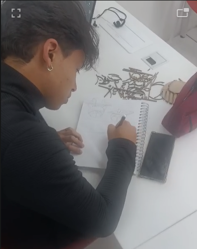
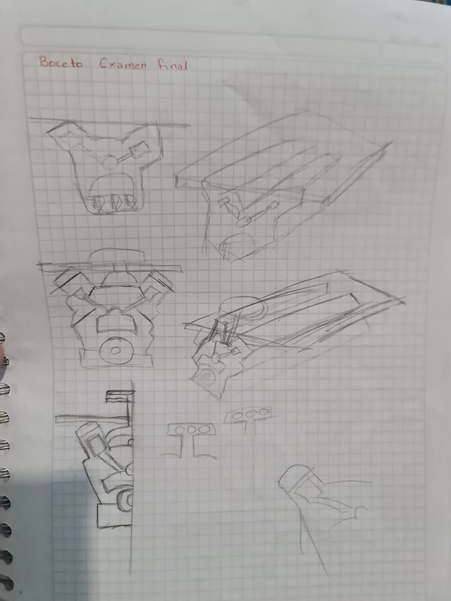

Motor V6

Entre las ideas de muebles a diseñar estaba un motor V6, el cual fue sencillo de dibujar y sus piezas fueron muy sencillas de ilustrar. Sin embargo, la razón por la que este diseño no llegó a cortarse fue debido a que en la interfaz de Slicer for Fusion 360 salían un total de 100 piezas para ensamblar y que fuera identificable la forma del motor V6, otro factor fue la dimensión del diseño. Al ser muy pequeño (45cm x 30cm) las piezas a ensamblar eran muy frágiles y al tener varios detalles el diseño tenía piezas "flotantes" a causa de que el diseño era muy complejo para este tipo de trabajos (corta a láser).